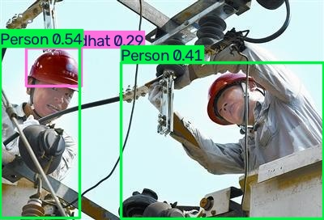

About Me
I am currently pursuing a Bachelor of Science
in Computer and Information Sciences at Lamar
University, with an expected graduation date
of May 2027. I previously earned an Associate
of Applied Science in Computer Information
Systems and Network Analysts and an Associate
of Arts in General Studies from Lee College.
My educational background has provided me
with a strong foundation in programming,
computer systems, networking, database
management, and information technology.
My professional background includes
experience in IT support and mobile device
management. I have worked with technologies
such as Active Directory, Microsoft Office
365 administration, Exchange Management
Console, Knox Mobile Enrollment, MaaS360,
and Scalefusion. These experiences have
helped me develop technical troubleshooting,
system configuration, documentation, and
problem-solving skills.
Throughout my academic studies, I have
developed several technical projects that
demonstrate my interest in software
engineering and emerging technologies.
These projects include a Python-based
accessibility assistant, a web-based gym
membership management system, and an
artificial intelligence project focused
on construction safety image detection.
Working on these projects has allowed me
to gain practical experience with Python,
Java, Spring Boot, React, MySQL, machine
learning frameworks, and application
development.
I have also earned several technical
certifications, including CompTIA Security+,
TestOut PC Pro, Linux Pro, Security Pro,
Routing and Switching Pro, and Server Pro
2016. These certifications complement my
academic education and demonstrate my
commitment to continuing professional
development.
My primary career interests include
information technology, software
development, systems administration,
networking, and artificial intelligence.
I enjoy learning new technologies,
troubleshooting complex problems, and
developing solutions that improve
efficiency and usability.
My professional goal is to pursue a career
where I can apply my technical knowledge,
continue developing my skills, and
contribute to meaningful technology
projects. I am particularly interested
in opportunities that combine hands-on
technical work with problem-solving,
collaboration, and continuous learning.
Projects
AI Accessibility Assistant (JARVIS)

Developed a Python-based accessibility
assistant that allows users to store,
organize, retrieve, and listen to
documents using voice commands or
keyboard input. The application features
wake-word activation, speech recognition,
text-to-speech functionality, and
persistent JSON document storage.
Technologies:
Python, SpeechRecognition, pyttsx3,
JSON, Windows Speech API.
View Project on GitHub
Gym Membership Management System

Contributed to the backend development
of a team-based Gym Membership Management
System using Java, Spring Boot, and MySQL.
Worked with REST API controllers, service
classes, JPA entities, and repositories
to support membership management, user
accounts, trainer appointments, and
attendance tracking.
The backend uses Spring Data JPA and
Hibernate for database persistence and
provides REST endpoints for frontend
integration. My contributions also
included troubleshooting database
relationships, resolving backend errors,
testing API functionality, and preparing
technical documentation.
Technologies:
Java, Spring Boot, MySQL, Spring Data JPA,
Hibernate, Gradle, Eclipse, Postman.
View Project on GitHub
Construction Safety AI Detection

Developed a Python-based AI project to analyze
construction site images and identify safety
equipment and potential safety concerns.
Implemented and evaluated three approaches:
a TensorFlow convolutional neural network (CNN),
YOLO26 object detection, and Google Gemini Flash.
Compared classification performance, object
detection results, and the limitations of each
approach.
Technologies:
Python, TensorFlow, Keras, Ultralytics YOLO26,
Google Gemini API, Pillow, NumPy, Matplotlib.
View Project on GitHub
Technical Skills
Programming
Python, Java, C, C++, JavaScript, SQL
Systems
Windows, Linux, System Administration
Databases
MySQL
Development Tools
Eclipse, GitHub, Postman,
MySQL Workbench
AI Tools
ChatGPT, Gemini